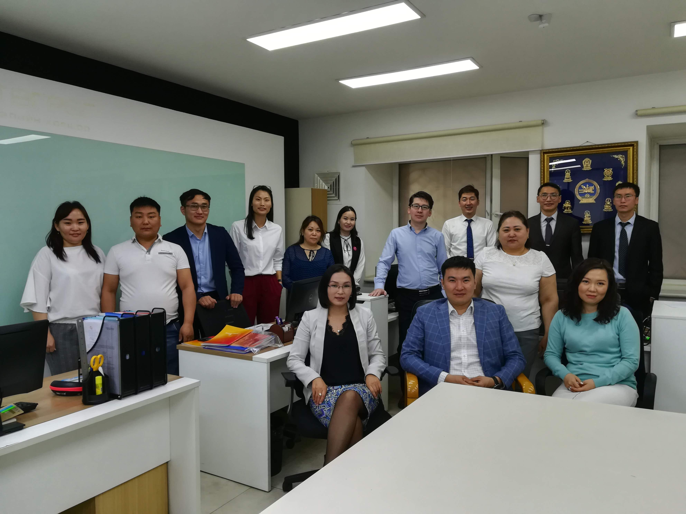

概要
- サマリー
-
モンゴル向けのインパクト投資ファンドです。Gyals Tugrug Savings and Credit Union（以下、Gyals社）へ融資します。
農家を中心にとした中小企業経営者向けのローンとなり、モンゴルの更なる経済発展に貢献します。 - ファンド名
- モンゴル農家さん応援ファンド4号
- 目標利回り（年率）
- 5.10%
目標利回りは、営業者報酬（年率2.0%）を差し引いた後の税引前の数字です。 - 募集期間
- 2020年2月4日から2020年2月25日まで
※期限日前に満額となった場合は、募集期間中でも募集を終了させていただく場合があります。
残り募集期間最終日のご入金期限は15時30分着金分までとなっております。 - 運用予定期間
- 2020年3月6日から2021年3月6日まで(12ヶ月)
※募集状況または融資先の事情により、期間前に運用開始する場合があります。 - 分配
- 6ヶ月後、12ヶ月後（全2回）
※なお、お客様への分配金お支払い手続きには1か月程度かかる場合があります。 - 分配金支払い予定時期
- 2020年9月、2021年3月（全2回）
- 償還予定時期
- 2021年3月
※なお、お客様への償還手続きには1か月程度かかる場合があります。 - 最低投資額
- ¥20,000 追加単位 ¥20,000
- 営業者報酬（年率）
- 2.0％
- 販売手数料
- 0％
- 通貨
- 日本円建て
※融資は米ドル建てで行なっており、為替リスクがあります。 - 募集者
- ネクストシフト株式会社
- 営業者
- ネクストシフト株式会社
- 担保・保証
- なし（モンゴル金融規制委員会から事業免許を取得し、正式に認可された機関のため、担保・保証は取っていません）
ファンド融資先情報
当ファンドでは、モンゴルのGyals社に融資を行います。
Gyals社は、主に郊外の農家や中小企業向けの融資事業を展開しています。
強い社会的ミッションを持った同国財務省や他の商業銀行出身の経営陣で構成される、マイクロファイナンス融資を取り扱う急成長中の金融機関です。
マイクロファイナンス専門の格付け機関であるMFRからはBBの格付けを取得しました。

- 会社名（融資先）
- Gyals Tugrug Savings and Credit Union
- 代表者名
- Mr. Battulga Naranbat
- 所在地
- Business 34 center, A corpus #1, Juulchin street, Chingeltei District, Ulaanbaatar, Mongolia
- 資本金（2018年12月末）
- 1,220,000ドル
- 総資産（2018年12月末）
- 10,391,000ドル
- 売上（2018年12月末）
- 3,064,000ドル
- 従業員（2018年12月末）
- 87名
- ミッション
- 商業銀行がリーチできない遠隔地で小口融資を提供し、農家や中小企業の生活向上を目指す。
- 経営陣
- Naranbat (CEO)
モンゴルの財務省でキャリアを始めた後、国営商業銀行の財務部長、その後最高財務責任者兼副社長に就任。 モンゴル国立大学で財政学の学位を取得、また日本留学経験もあり、日本貿易振興機構のイデアス研修プログラムに外国人研修生として参加。
Odgerel (COO)
モンゴルの最大手の一社であるKhan Bankに入社後、モンゴル国営銀行で融資部門のディレクターとして経験を積む。 その後当社に参画し、現在は21の州にわたる支店のオペレーションを管理している。
Nyamdeleg (CFO)
会計担当としてKhan Bankに入社し、その後モンゴル貯蓄銀行や国営銀行の財務を担当。 - ウェブサイト
- http://www.gyalstugrug.mn/
- 前年度の年次報告リンク
- http://www.gyalstugrug.mn/financial-reports
- 融資残高（2018年12月末）
- 7,116,712ドル
- 貸し倒れ率（2018年12月末）
- 2.70％
- 借り手数（2018年12月末）
- 7,800名
- 平均融資金額
- 600ドル
- 借り手の属性（農家など）
- 農家、中小企業
- 債権管理の方法
- 定期的に融資先MFIから報告を受けることに加え、担当者が現地に訪問し、融資先のヒアリングをしています。
- 経営者メッセージ
- Gyals Tugrugは3期目を迎え、モンゴルで最大規模の信用組合となりました。
私たちは銀行のサービスを受けることができない方々にサービスを提供し、マイクロビジネス事業者のサポートをしています。
現在全国に37の支店があり、主に農村地域で金融サービスを提供しています。2018年は融資残高増加、増益および増資をし、
さらなる成長をすることができました。
当社の企業文化は、信頼、気遣い、サポート、そして誇りです。5～10年に及ぶ銀行業界での経験を積んだチームで構成され、 約1万名いるお客様に質の高いサービスを提供しています。また仕事では誇りと責任を持って毎日仕事に取り組み、献身的な努力を怠りません。 貸付ポートフォリオは、女性向け世帯および中小企業、自営業および農業分野へのマイクロ融資がメインです。 モンゴルの信用組合史上初めて、マイクロファイナンス機関専門の格付け機関から格付けBBを取得し、 見通しは安定と評価してもらいました。アジアで急成長している信用組合として光栄に思っています。 また、当社は社会的に責任のある機関であり、私たちはモンゴルの肝がんセンターに会費の10パーセントを寄付します。 今回のファンドで調達した資金は、農村部の家畜事業者、また農業を営む女性向けの融資に主に使われます。
当社の規模は年々成長し続けており、地理的市場およびサービスの拡大のための戦略を立てています。モンゴルの中小企業への貢献のため、 ご支援のほど、よろしくお願い申し上げます。
-
最高経営責任者 Battulga Naranbat
融資条件（Gyals社）
- 融資額
- ファンド成立額（6,000,000円）から送金等費用を控除後、米ドルに転換した額
- 融資金利
- 年率8.75％（現地源泉税10％が課されます。控除後：年率7.875％）
※当社が受領するのは、融資額に対し年率7.875％です。 - 融資予定日
- 2020年3月6日
- 融資予定期間
- 2020年3月6日から2021年3月6日（12ヶ月）